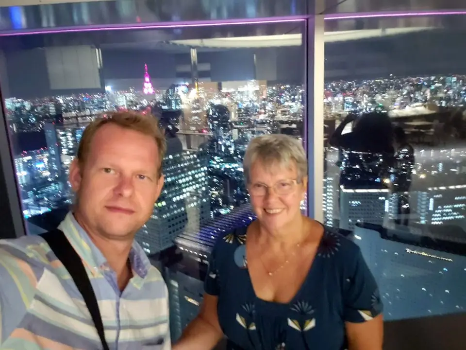
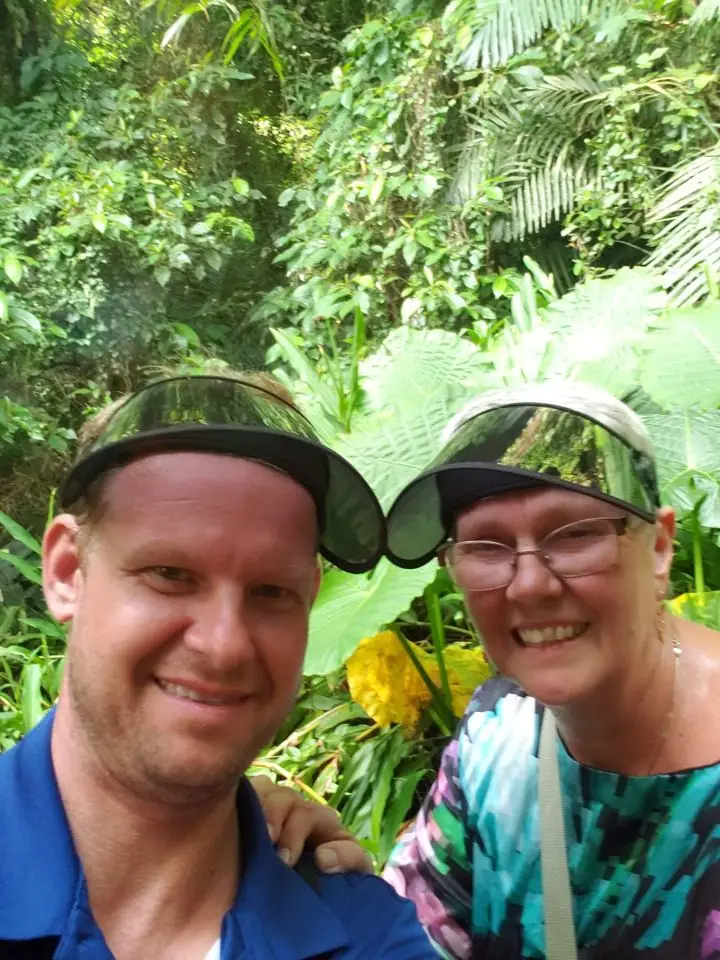
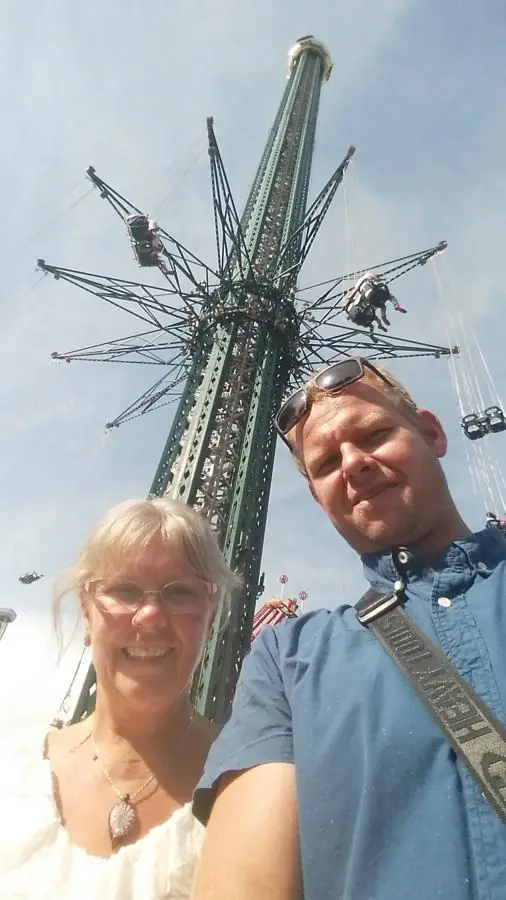

Like my grandma, my mom is now my biggest fan, and she keeps all the pictures. Since I turned 30 and realized she won't be around forever, I've made a point of traveling the world with her whenever we can.








Enjoyed this? Leave me a note.
Sign the guest book